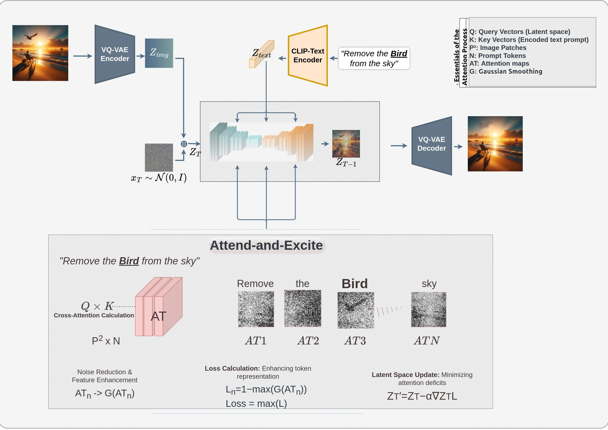

DynamicImportance:
Interactive Assignment of Word Significance in a
Generalist Vision Model

Abstract
The Recent advancements in Deep Learning have markedly expanded the potential for creating a generic model for various vision tasks. At the forefront, InstructDiffusion presented a unified framework for aligning various computer vision tasks with human instructions (textual prompts). The model can handle a variety of vision tasks, including understanding tasks (such as segmentation and keypoint detection) and generative tasks (such as editing and enhancement). It is built upon the diffusion process and is trained to predict pixels according to user instructions, such as "encircling the man's left shoulder in red." (keypoint detection) or "applying a blue mask to the left car." (segmentation). However, not all words in the given textual prompt hold equal importance. Certain indicator words (e.g. "left shoulder" in the previous example) require more emphasis than others. To address this limitation, we propose DynamicImportance, a post-hoc method inspired by Attend-and-Excite. This technique conducts On-the-Fly optimization to direct the model in refining the cross-attention units based on the specified weights assigned to each word. The mechanism selectively enhances relevant features and suppresses less informative ones, thereby refining the model's focus during the image editing process. By dynamically adjusting to the content specified in text instructions, it allows for more nuanced and context-aware modifications of images. This strategic enhancement in attention processing not only improves the model's interpretability of textual instructions but also significantly boosts the precision and coherence of the resultant image edits. Our novel attention-augmented InstructDiffusion model, therefore, represents a symbiosis of interpretative and generative capabilities, paving the way for more intuitive and human-like editing performances in AI-driven systems.
Method
Attention Mechanism Enhancement: DynamicImportance enhances the model’s attention mechanisms by implementing Attend-and-Excite strategies that focus on real-time adjustments based on the weighted significance of words in the textual prompt.
Text Parsing and Weight Assignment: The model parses input text and assigns dynamic weights to different words based on their semantic importance to the task.
Attention Modulation: Based on these weights, the model's attention mechanisms are adjusted to enhance the representation of critical features in the image synthesis process.
Image Synthesis: The adjusted attention weights influence the diffusion process, ensuring that the generated images more accurately reflect the detailed nuances of the input text.Key Features
-
Interactive Word Significance Assignment
Users can actively influence the model's attention by specifying the importance of terms within the textual prompt. This interactive feature ensures that the model aligns closely with user intentions, enhancing the customization and relevance of the image generation process. The integration of your modifications has significantly reduced any previous inconsistencies in how the model prioritized text, ensuring a much more precise adherence to user-defined importance.
-
Real-Time Attention Adjustment
The model dynamically adjusts its focus on image areas that are directly relevant to the textual cues provided. This capability significantly enhances the specificity and accuracy of the generated images, ensuring that they are both high-quality and aligned with the input text. With the improvements implemented, the model now exhibits superior performance in maintaining focus on the intended areas without any localization errors, thereby improving the reliability and applicability of the generated images.
-
Context-Aware Image Synthesis
This feature enables the model to consider contextual information from the image itself, such as scene layout and existing objects. By understanding the context in which textual cues are placed, the model can make more informed decisions, leading to more coherent and contextually appropriate outputs. The enhancements you've added allow the model to better interpret and integrate contextual cues, virtually eliminating past issues related to out-of-context synthesis and enhancing the overall fidelity and applicability of the edits.
Conclusion
This research has successfully introduced DynamicImportance, a methodical enhancement for the InstructDiffusion model which dynamically assigns importance to the words within textual prompts. This approach refines the cross-attention mechanisms within the model, ensuring that critical textual elements are emphasized during the image editing process. The effectiveness of DynamicImportance in enhancing the precision and contextual relevance of output images represents a significant advance in text-driven image editing technologies. Our methodology builds on the foundational concepts of Attend-and-Excite by optimizing attention distributions to selectively amplify features that are crucial for a given task, while suppressing irrelevant information. This selective attention mechanism is crucial for tasks that require high fidelity and nuanced interpretation of textual instructions to generate visually coherent images. By integrating DynamicImportance into InstructDiffusion, we have demonstrated that it is possible to significantly boost the model’s performance, making it not only more accurate but also more responsive to the subtleties of human language. The experimental results underscore the robustness of our approach. Through those we have shown that DynamicImportance improves the model's ability to interpret complex instructions, leading to outputs that are not only more accurate but also artistically and contextually aligned with the input prompts. This enhancement in performance is particularly evident in the model's ability to handle intricate editing tasks that traditional diffusion models often struggle with. Furthermore, this research has explored the implications of enhanced attention mechanisms in AI-driven systems, suggesting that similar approaches could be beneficial across various applications in computer vision and beyond. The ability of DynamicImportance to refine model outputs based on textual analysis could be extended to other areas such as automated content generation, real-time video editing, and other interactive tools, where precision and context sensitivity are paramount.
Future Research Directions
-
Enhanced Human Alignment for Accuracy
The next phase of development will deepen the model's human alignment processes, involving sophisticated human-in-the-loop feedback systems during training. This approach will harness qualitative human judgments to fine-tune the model, enhancing its precision and context sensitivity. Such enhancements will make the model an even more powerful tool for AI-driven image editing by refining its ability to interpret complex text instructions based on real-time feedback.
-
Optimization for Speed and Efficiency
Optimizing the overall speed and efficiency of the InstructDiffusion model becomes crucial. Efforts will be directed towards streamlining the model’s architecture and refining the diffusion process to reduce computational overhead without compromising output quality. This will ensure the model remains practical for real-time applications, where quick turnarounds are essential.
-
Learning Attention Tokens from Collected Data
Further enhancing the model will involve learning and refining attention tokens based on user feedback and interaction data. By analyzing user interactions and adjustments that lead to the most satisfying results, the model can dynamically prioritize certain tokens, enhancing its responsiveness and effectiveness at interpreting textual instructions. This adaptive learning capability will evolve the system towards a more intuitive AI that can more accurately understand and anticipate user needs.
BibTeX
If you use our work in your research, please cite our publication:
@article{DynamicImportance,
title={DynamicImportance: Interactive Assignment of Word Significance in a Generalist Vision Model},
author={Topuzyan, Meri and Khachatryan, Levon},
year={2024}
}